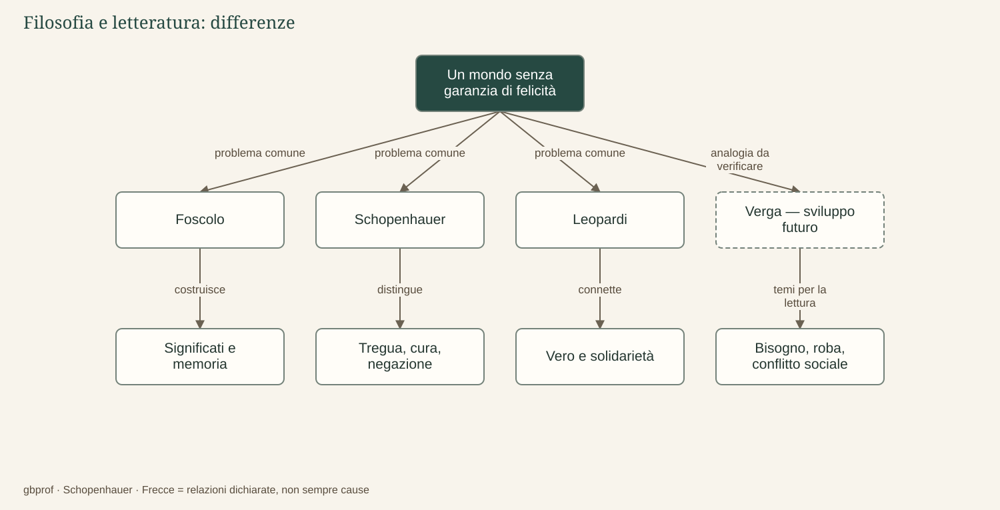

B · Schopenhauer e la letteratura · 05
Una domanda, risposte differenti
Se il mondo non è ordinato per la felicità dell’uomo, come si può vivere?
Possiamo ora tornare alla domanda che ha attraversato l’intero ambiente, senza cercare una risposta unica da attribuire a tutti gli autori. Abbiamo incontrato un universo che non garantisce il bene dei singoli, un desiderio che eccede spesso ciò che ottiene e una sofferenza che resiste alle consolazioni più facili. Questo terreno comune non cancella la diversità delle immagini del mondo e delle forme espressive nelle quali viene pensato.
Una sintesi che conserva le differenze
Foscolo costruisce significati umani dentro la finitezza: gli affetti, la poesia e la memoria non annullano la dissoluzione materiale, ma possono rendere una vita significativa per altre vite. Schopenhauer riconduce l’instabilità dell’esistenza al volere e distingue contemplazione, compassione e negazione ascetica. Leopardi, nella risposta matura della Ginestra, connette la conoscenza del vero alla solidarietà, senza promettere un riscatto cosmico.
Verga rimane il quarto termine di un confronto da completare attraverso le opere: la traccia predisposta riguarda meccanismi sociali ed economici nei quali gli individui desiderano, competono, si adattano o vengono sconfitti. Non gli attribuiamo una soluzione metafisica, e non usiamo il suo nome per chiudere artificialmente una serie. La mappa lo distingue graficamente come sviluppo futuro.
Perché questa non è una storia di influenze
L’ordine dei nomi nella mappa non è una catena di maestri e discepoli. Una somiglianza fra problemi non prova che un autore abbia letto l’altro o ne abbia assunto il sistema. Le date, da sole, non bastano a dimostrare una dipendenza; occorrerebbero testimonianze, letture documentate, riferimenti e un’analisi del modo in cui sono stati utilizzati. Qui il confronto è dichiaratamente interpretativo e didattico.
Lo stesso rigore vale per le parole. «Illusione» non ha automaticamente il medesimo significato in Foscolo e in Leopardi; «Natura» non è un sinonimo della Volontà; «lotta» può designare una struttura metafisica, un conflitto sociale o una scelta civile. Prima di cercare equivalenze, conviene chiedere quale funzione svolga ogni concetto nel testo che lo impiega.
Una prova finale di comprensione
Per verificare ciò che hai compreso, costruisci una risposta argomentata alla domanda generale scegliendo due autori. Comincia da un problema comune, individua un passaggio testuale per ciascuno e mostra una differenza che impedisca di sovrapporli. Puoi partire dalla memoria dei morti, dalla fame dell’Islandese, dalla contemplazione di un’opera o dall’aiuto reciproco nella Ginestra; l’esempio deve sostenere il ragionamento, non sostituirlo.
Una buona risposta non si limita a concludere che tutti sono pessimisti. Spiega che cosa ciascuno considera possibile dopo la perdita di una garanzia provvidenziale e con quale prezzo teorico o umano. È proprio qui che filosofia e letteratura si incontrano senza confondersi: nella capacità di dare forma a una domanda e di rendere discutibile, quindi pensabile, la risposta.
Il problema in un’immagine
Dopo la lettura
Mappa di sintesi


Leggi la mappa in forma testuale
- Un mondo senza garanzia di felicità problema comune Foscolo.
- Un mondo senza garanzia di felicità problema comune Schopenhauer.
- Un mondo senza garanzia di felicità problema comune Leopardi.
- Un mondo senza garanzia di felicità analogia da verificare Verga — sviluppo futuro.
- Foscolo costruisce Significati e memoria.
- Schopenhauer distingue Tregua, cura, negazione.
- Leopardi connette Vero e solidarietà.
- Verga — sviluppo futuro temi per la lettura Bisogno, roba, conflitto sociale.
Fermati sul problema
Come va predisposto il confronto futuro con Verga?
Confronta il tuo ragionamento
Come analogia da verificare tra dinamica del desiderio e meccanismi sociali, senza presumere influenze. Il nodo è interpretativo e ancora da sviluppare: nessuna dipendenza documentata viene qui affermata.